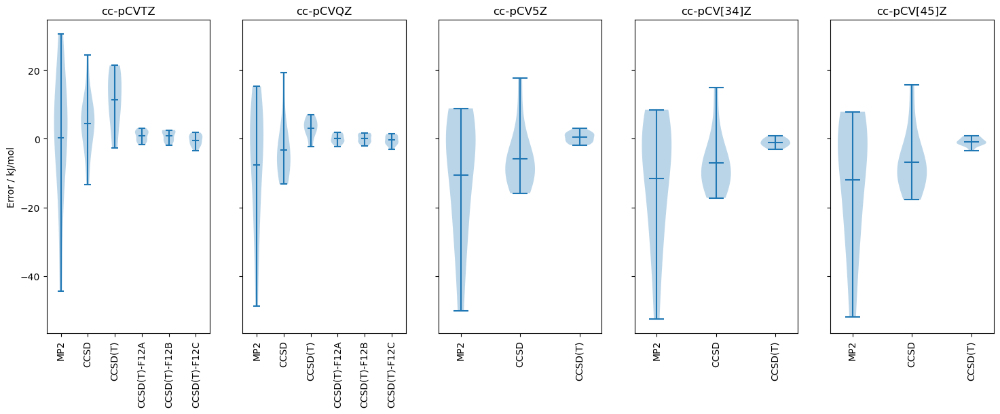

Thermochemical Benchmark: closed shell reactions with core correlation
Bak et al., doi:10.1063/1.1357225 and doi:10.1063/1.481544
[1]:
import pymolpro
import pandas as pd
[2]:
backend = 'local' # If preferred, change this to one of the backends in your ~/.sjef/molpro/backends.xml that is ssh-accessible
project_name = 'Bak2000_reactions'
parallel = None # how many jobs to run at once
[3]:
methods = ['HF', 'MP2', 'CCSD', 'CCSD(T)']
bases = ['cc-pCVDZ', 'cc-pCVTZ', 'cc-pCVQZ', 'cc-pCV5Z']
[4]:
db = pymolpro.database.load("Bak2000_reactions")
[5]:
results = {}
for method in methods:
results[method] = {}
for basis in bases:
results[method][basis] = pymolpro.database.run(db, method, basis, location=project_name, backend=backend,
preamble="core,small", parallel=parallel)
[6]:
for method in methods:
for result in pymolpro.database.basis_extrapolate(results[method].values(),results['HF'].values()):
results[method][result.basis]=result
for basis in results[method]:
if basis not in bases: bases.append(basis)
[7]:
tokj = 2625.49963948
pd.set_option('display.precision', 2)
method_errors = pymolpro.database.analyse([results[method]['cc-pCV5Z'] for method in methods], db)[
'reaction statistics'] * tokj
method_errors
[7]:
| HF | MP2 | CCSD | CCSD(T) | |
|---|---|---|---|---|
| cc-pCV5Z | cc-pCV5Z | cc-pCV5Z | cc-pCV5Z | |
| mean | 9.25 | -10.49 | -5.78 | 0.39 |
| stdev | 41.24 | 18.17 | 9.20 | 1.51 |
| meanabs | 29.06 | 14.46 | 9.37 | 1.30 |
| maxabs | 113.66 | 50.01 | 17.72 | 3.00 |
[8]:
pd.set_option('display.precision', 2)
basis_errors = pymolpro.database.analyse([results['CCSD(T)'][basis] for basis in bases], db)[
'reaction statistics'] * tokj
basis_errors
[8]:
| CCSD(T) | |||||||
|---|---|---|---|---|---|---|---|
| cc-pCVDZ | cc-pCVTZ | cc-pCVQZ | cc-pCV5Z | cc-pCV[23]Z | cc-pCV[34]Z | cc-pCV[45]Z | |
| mean | 33.39 | 11.31 | 3.02 | 0.39 | 2.70 | -1.13 | -0.83 |
| stdev | 25.92 | 8.07 | 2.88 | 1.51 | 4.83 | 1.23 | 1.22 |
| meanabs | 36.73 | 12.05 | 3.70 | 1.30 | 4.37 | 1.33 | 1.19 |
| maxabs | 65.92 | 21.33 | 6.97 | 3.00 | 10.79 | 3.15 | 3.49 |
[9]:
import matplotlib.pyplot as plt
methods_pruned = [method for method in methods if method != 'HF']
bases_pruned = ['cc-pCVTZ', 'cc-pCVQZ', 'cc-pCV5Z', 'cc-pCV[34]Z', 'cc-pCV[45]Z']
fig, panes = plt.subplots(nrows=1, ncols=len(bases_pruned), sharey=True, figsize=(18, 6))
for pane in range(len(bases_pruned)):
data = []
for method in methods_pruned:
data.append(
pymolpro.database.analyse(results[method][bases_pruned[pane]],
db)['reaction energy errors'].to_numpy()[:, 0] * tokj
)
panes[pane].violinplot(data, showmeans=True, showextrema=True, vert=True, bw_method='silverman')
panes[pane].set_xticks(range(1, len(methods_pruned) + 1), labels=methods_pruned, rotation=-90)
panes[pane].set_title(bases_pruned[pane])
panes[0].set_ylabel('Error / kJ/mol')
plt.savefig(project_name + ".violin.pdf")

[10]:
# with open(project_name + '.tex', 'w') as tf:
# tf.write('\\def\\toprule{\\hline\\hline}\n\\def\\midrule{\\hline}\n\\def\\bottomrule{\\hline\\hline}')
# tf.write(df_exp_reaction_meanerror.style.to_latex())
# tf.write(df_exp_reaction_std.style.to_latex())
# tf.write(df_exp_reaction_meanabserror.style.to_latex())
# tf.write(df_exp_reaction_maxerror.style.to_latex())
[10]: